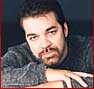
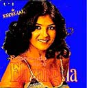

| visitantes do site de 1997 a 2020 |
MEIO MUSICAL - DIVULGAÇÃO PARA PRODUTORES - GRAVAÇÃO - GRAVADORAS
O produtor e maestro Hugo Bellard fundou o site MusikCity® em 1997. Além dos arranjos e gravações que o tornaram produtor/maestro de sucesso, o outro objetivo foi utilizar os canais do maestro no meio musical para indicar novos talentos como cantores, bandas, compositores e letristas sem limite máximo de idade. Essa indicação é feita diretamente para Produtores Musicais, Diretores de Gravadoras, Produção Musical das Novelas da TV Globo e Editoras Musicais.
|

radios ao vivo do Brasil variadas
Raul Seixas e Tim Maia chamaram Hugo Bellard para gravar os teclados em alguns de seus Albuns.
|
Na foto Claudia Leite ao lado de Sabrina Niskier, assistente do maestro Hugo Bellard.
|

CANAIS DO SITE:
|
ESCOLHA UM DOS CANAIS ABAIXO OU CONTINUE A LER EM SEGUIDA PARA MAIS INFORMAÇÕES:
Na foto o produtor e maestro Hugo Bellard rege um de seus arranjos que foram Disco de Platina ou de Ouro nos estúdios da Universal Music RJ (Polygram). Se você quer apenas uma consultoria musical de 45 minutos pelo telefone com o maestro, verifique o valor da consulta clicando aqui. Se você quer que suas músicas, produção musical ou letras sejam encaminhadas através dele para produtores musicais, diretores de gravadoras, selos, editoras musicais e novelas da Globo, entre aqui. |

A trilha do filme "Quando Eu Era Vivo" de 2014 com Antonio Fagundes e Sandy possui música de autoria, arranjada e produzida por Hugo Bellard..
|
Com arranjos do maestro Hugo Bellard, responsável pelo site MusikCity, o album "Tábuas das Esmeraldas" de Jorge Ben Jor foi eleito pela revista inglesa Rolling Stones como um dos 6 melhores álbuns gravados no Brasil em todos os tempos.
|
|  O sucesso e disco de platina 'Sonhos' (peninha) é mais um arranjo de Hugo Bellard. |
Nando e Kiko, da banda Roupa Nova, tendo ao centro o produtor e maestro Hugo Bellard, em foto recente na casa de um deles.
Música de Hugo Bellard cantada pelo Serginho do Roupa Nova, entrou na novela Pecado Rasgado. |
Mariozinho Rocha
Até pouco tempo era o Diretor musical das novelas da TV Globo. Agora ocupa a presidência da ABRAMUS, Sociedade de Compositores ligada ao Ecade.
Por isso ainda mantém uma grande influência no envio de músicas para as novelas. Foi Mariozinho quem indicou o Hugo Bellard para fazer o arranjo original da consagrada Música anual de Natal da TV Globo. |
 |
O sucesso "Meu Sangue Ferve Por Você" com Sidney Magal é arranjo de Hugo Bellard em gravação para a Universal Music - Polygram.
|
Hugo Bellard fez o arranjo de "Você Não Me Ensinou a Te Esquecer" do Fernando Mendes que está ao lado dele na foto.
A música foi mais tarde regravada pelo Caetano Veloso. |
O cantor José Augusto gravou seus primeiros grandes sucessos com arranjos de Hugo Bellard na Emi. Dois deles, a música "Meu Primeiro Amor" (Mi Primer Amor) e Candilejas, entraram na parada do México e na latina da Billboard vendendo mais de dois milhão de álbuns em 5 países.
|
O cantor Wando gravou "Me Cace Me Ache", de Hugo Bellard e Paulo Sérgio Valle, além de outra música da dupla - "Não Posso Ser Teu Amigo".
O album foi o de maior vendagem na carreira do Wando. |


Divulgação de Cantores e Bandas para Radios
MusikCity® 1997-2021
updated 27 de setembro de 2020